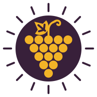

Primi e Secondi da acquolina di bocca
Tonnarelli, strozzapreti e gnocchi preparati ogni mattina con le verdure dell'orto.


C'è un'onestà profonda nel veder crescere ciò che si mangia.
Grappoli di Sole: il nome è già una promessa.


Ricette tramandate, fuoco vivo.
Tonnarelli, strozzapreti e gnocchi preparati ogni mattina con le verdure dell'orto.

Salumi e formaggi dell'agro romano, composte e fritti di stagione.

Agriturismo Grappoli di Sole
Via Ardeatina, 1943
00134 Roma RM
Disponibilità alloggio su richiesta